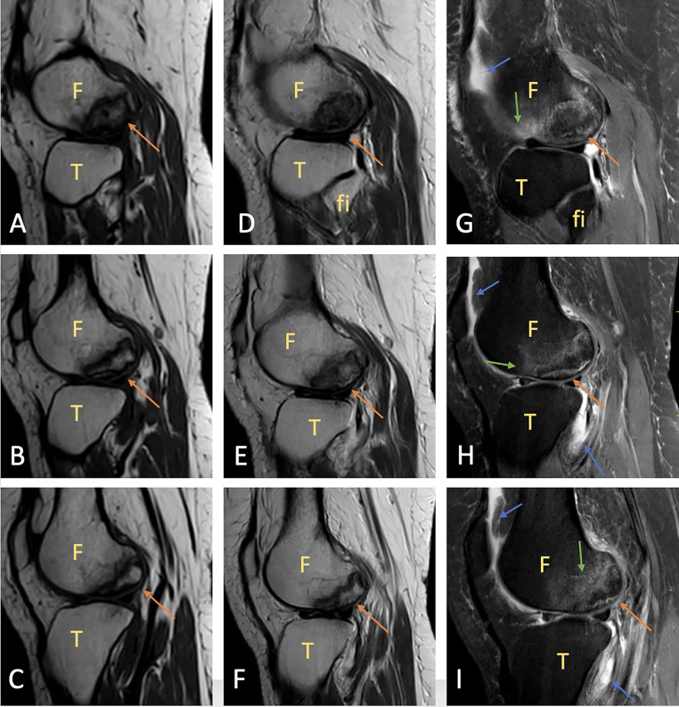

361 — Háng: AVN đường đôi, gãy mỏi & FAI / Hip MRI
Tags: pattern:khop-hang vung:khop-hang score:ARCO
Mức chắc chắn (certainty): tổng hợp y văn (literature synthesis) — nhóm tự biên từ y văn mở, chưa gắn ca nguyên văn đơn lẻ.
1. Tổng quan — chỏm đùi thiếu máu + cổ đùi chịu uốn + cùng đùi-chậu va chạm
- AVN chỏm đùi (corticoid, rượu, lặn, hồng cầu liềm): tắc mạch nuôi → hoại tử + ranh giới sửa chữa — TẠI SAO đường đôi (double-line: ngoài đen xơ + trong sáng mạch) trên T2: viền xơ (đen) + mô hạt mạch (sáng) bao quanh vùng chết.
- Gãy mỏi cổ xương đùi: đường đen T1 vuông góc bè xương bờ trong (compression) — TẠI SAO gãy bờ trong nguy hơn ngoài: trong chịu nén tiến triển lún, ngoài chịu kéo toác.
- FAI cam: chỏm-mấu nối lồi (alpha > 55°) va vành ổ cối khi gấp-xoay — TẠI SAO rách sụn viền + thoái hóa sớm: cam cào sụn mỗi lần gấp sâu.
2. Gamut đau háng (Gamut)
- Đường đôi + phù + corticoid/rượu: AVN sớm — khoan giảm áp + ARCO theo dõi.
- Đường đen T1 bờ trong + VĐV/lính: gãy mỏi — nghỉ + vít khi lệch.
- Alpha > 55° + đau gấp-xoay + sụn viền: FAI cam — nội soi gọt cam + khâu viền.
- Hẹp khe + gai + > 60 tuổi: OA háng — thay khớp khi nặng.
3. Bảng so sánh phân biệt (ma trận đối chiếu)
| Thực thể (entity) | Hình ảnh điển hình | Chốt vào (rule-in) | Chốt loại (rule-out) | Gợi ý xác nhận |
|---|---|---|---|---|
| AVN sớm | Đường đôi T2 + phù + chưa xẹp (ARCO I–II) | Double-line + nguy cơ + chưa xẹp | Xẹp + lưỡi liềm → ARCO III–IV | Khoan giảm áp + MRI |
| Gãy mỏi cổ đùi | Đường đen T1 vuông bè + phù + bờ trong | Đen T1 + VĐV + đau cơ học | Đường đôi + nguy cơ → AVN | Nghỉ/vít, cấm chịu lực |
| FAI cam | Alpha > 55° + rách viền + phù cùng | Cam + FADIR (+) + trẻ thể thao | Hẹp + gai + già → OA | Nội soi gọt + khâu viền |
| OA háng | Hẹp cực trên + gai + đặc + nang | Già + hẹp + gai | Đường đôi → AVN | Thay khớp toàn phần |

Vùng địa lý + viền đôi + phù tủy + tràn dịch nhẹ, sụn còn nguyên. Nguồn: Gulghane et al., Radiol Case Rep 2025 Fig. 1, CC BY-NC-ND 4.0 (giữ nguyên bản; minh họa đường đôi áp dụng được cho chỏm đùi).4. Protocol MRI háng
- MRI coronal T1/STIR + axial oblique + đo alpha khi đau háng + XR mờ; ARCO I–IV quyết định giữ hay thay chỏm.
flowchart TD
A[Đau háng + XR mờ] --> B{MRI thấy gì?}
B -->|Đường đôi| C[AVN: ARCO + khoan]
B -->|Đường đen T1| D[Gãy mỏi: nghỉ/vít]
B -->|Alpha>55 + viền| E[FAI: nội soi]
5. Cạm bẫy
- AVN gọi nhầm gãy mỏi khoan oan — đường đôi + nguy cơ là AVN, đường đen đơn + VĐV là mỏi.
- FAI bỏ sót thành OA sớm — alpha + viền ở người trẻ thể thao phải đo, đừng chỉ NSAID.
- Gãy mỏi bờ trong chịu lực tiếp = di lệch hoại tử — cấm chịu lực + vít sớm.
6. Tự lượng giá — Blind Quiz
Ca 1 — Nữ 38 tuổi đứng 12 giờ/ngày + đau gối ngoài 4 tuần. Đọc MRI.
- Hỏi: tên dấu? AVN hay OCD? Sụn còn không?
Bấm để hiện đáp án
- Dấu hiệu (findings): vùng địa lý + đường đôi (ngoài đen + trong sáng) + phù + tràn dịch, sụn nguyên vẹn.
- Chẩn đoán (diagnosis): hoại tử vô mạch (AVN) — bảo tồn + giảm tải + NSAID (sớm, chưa xẹp; OCD là mảnh sụn-xương bong).
- Nguồn: Gulghane et al., Fig. 1, CC BY-NC-ND 4.0 (nguyên bản; đường đôi là dấu chung mọi vị trí AVN).
Ca 2 — Lính + đau háng + đường đen T1 bờ trong: AVN hay gãy mỏi? (Bảng mục 3.)
Bấm để hiện đáp án
- Gãy mỏi: cấm chịu lực + vít (đường đôi + corticoid mới là AVN).
Bài liên quan chéo
- 300 – Tổng quan MSK
- 325 – Gãy mỏi (mệt vs thiếu)
- 360 – Khớp gối (AVN lồi cầu)
Không dùng để chẩn đoán độc lập khi chưa có người hướng dẫn.